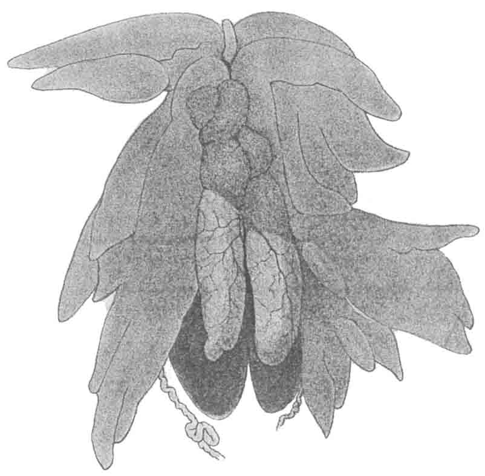
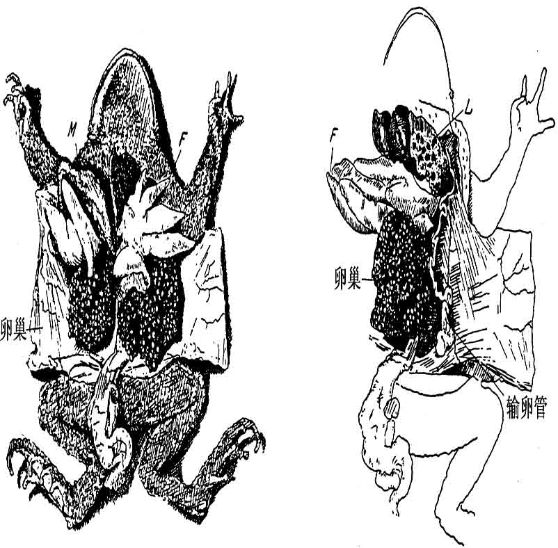

雄蟾的Bidder氏器官向卵巢的转化
雄蟾精巢的前部由像幼小卵细胞似的圆形细胞组成（图147）。甚至在精巢后部或精巢本身的生殖细胞还没有分化以前，幼蟾的精巢前部便已经够显明了。前部称为Bidder器，许多年来引起了动物学者的注意，他们对于Bidder器可能的用途提出了许多看法。最普遍的解释，是把Bidder器当为卵巢；Bidder器的细胞同卵子类似这一点，便是这项解释的有力证据。不过雌性幼蟾在其真正卵巢的前端也有Bidder器，这就不容易符合前一解释，否则雌蟾便会前端有退化卵巢或祖型退化卵巢，而后端又有作用的卵巢了。

图147 半成年的加利福尼亚种雄蟾，精巢的前端有Bidder器，两侧有脂肪体的各叶，下面有肾脏。壁上有分支血管的，为精巢
Guyénot和Ponse（1923）以及Harms（1923，1926）的实验先后证明：在幼蟾的精巢被完全摘除以后的二三年内，Bidder器发育成为卵巢，并产生卵子（图148）。卵子由母体排出，经过受精以后的发育，也被观察到了。这里，毫无疑问，在摘除精巢后产生了雌性；至于接受手术的个体，究竟应该称为雄性或者称为雌雄同体，也许是一个定义的问题。我个人会把它称为雄性，并且认为上述结果意味着：由于摘除精巢，雄性才转化成了雌性。我认为雄蟾器官里的细胞可能发育成卵子这一点，还是次要的问题，因为一般说来，即使性别决定于染色体机制，这也并不意味着，预定生殖腺所在地区的未分化的细胞，由于具备了在另一种情况下产生雄性的那种染色体群。便不能在不同的环境下变成卵细胞。从基因方面看，这就是说，蟾蜍有这样的一种基因平衡，在正常发育条件下，一部分生殖腺（前端）开始发育成卵巢，而另一部分（后端）开始发育成精巢；随着发育的进展，卵巢的发育赶上了精巢的发育，并且制约着精巢进一步的发育。但是如果摘除精巢，这种制约也就消失了，于是Bidder器的细胞便重新发育，成为有作用的卵子。Ponse从转化了的雄蟾的卵子，得出9雄和3雌。Harms从同一只雄蟾育成了子代的104个雄性和57个雌性。假定雄蟾为XY，预料转化后的雄蟾会有X和Y两类卵子，各占半数。这些卵子如果同正常雄蟾的精子受精，预计子代中，将为1XX+2XY+1YY。YY型个体多数不能发育，从而造成了2雄和1雌的比例，同实际结果密切符合。

图148 摘除精巢三年后的蟾蜍，Bidder器发育成了卵巢。在右边图里，为了显出胀大的输卵管，于是把卵巢翻到一侧去了（仿Harms）
Champy描述过蝾螈Triton alpestris中“完全性转化”的一个例子。一只雄螈原呈雄性作用，有生殖力，以后任其断食。在这些情形下，精子不能进行正常的更新，不过蝾螈依然保持某种“中性状态”，它的特点，是精巢里面有了原生殖细胞。在这种状态下渡过了整个冬天。再取两只断食的雄螈，加强营养，以后便发生了从雄性色彩到雌性色彩的变化。几个月以后，检查了其中的一只，Champy认为检查结果可以证明性的转化。鉴于这个例子近来会被用为性转化的充分的证据，所以值得比较详细地谈一谈Champy的实在记载。他看到的，不是卵巢，而是一个大致和幼小卵巢相似的长形器官。在它的切片上看到了器官内有幼小的卵形细胞（“卵母细胞”）同变态期内幼螈的细胞相似。又有一条输卵管，白色而曲折，所以显然可辨。Champy由此断言：这里是一个具备幼小雌螈卵巢的成年动物。这项证据似乎指明，断食处理导致了精母细胞和精子的吸收；这却不能明确地指明以后发生的新细胞，究竟是胀大的精原细胞，还是原生殖细胞，或者是幼小的卵子。根据两栖类的其他证据（Witschi、Harms、Ponse），下面的结论也并不是不可能的：就是，这些细胞实在是幼小的卵细胞，并且也发生了不完全的性转化。